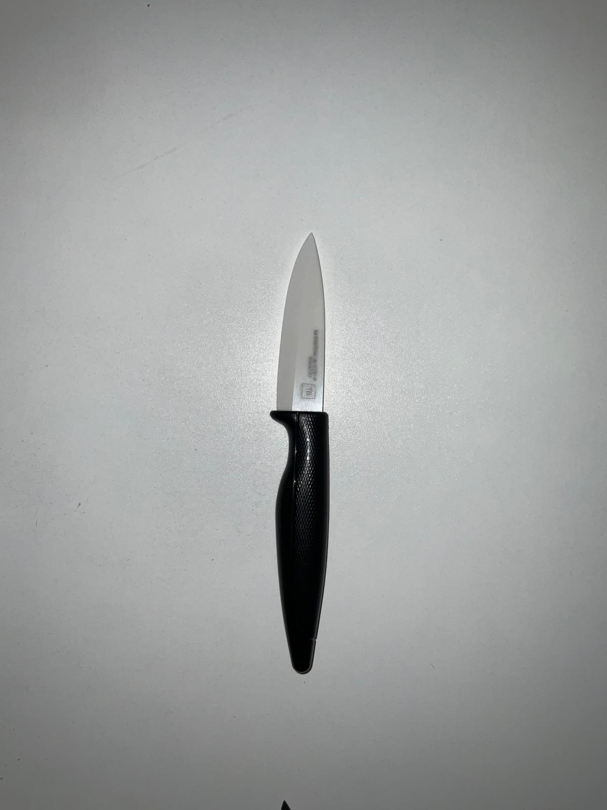
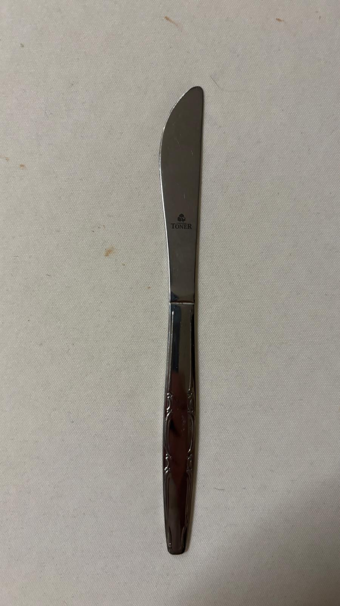

Spoon Knives
Clasificador de imágenes de cuchillos y cucharas — 97 % de exactitud equilibrada a partir de 31 imágenes fotografiadas a mano, usando características geométricas propias y K vecinos más cercanos. Sin aprendizaje profundo, sin pesos preentrenados: solo características diseñadas a mano y una canalización interpretable.
El conjunto de datos
31 fotografías de utensilios de cocina —cuchillos y cucharas— sobre un fondo blanco. Reunidas a mano para controlar la iluminación y el ruido; lo bastante pequeño como para resultar honesto, lo bastante grande como para entrenar un clasificador real.





La canalización
- Cargar y mostrar el conjunto de datos: cada imagen se lee del disco y se previsualiza.
- Preprocesar: la detección del primer plano aísla el utensilio; un recorte central normaliza la escala.
- Extraer características: seis descriptores geométricos propios capturan la forma.
- Entrenar y comparar varios clasificadores con validación cruzada.
- Evaluar el mejor modelo con una matriz de confusión sobre datos reservados.
Ingeniería de características
Cada imagen se reduce a seis números interpretables: sin embeddings de caja negra, sin aprendizaje por transferencia:
- Elongación: relación entre el eje mayor y el menor de la silueta.
- Redondez: cuánto se aproxima el contorno a un círculo.
- Variación de anchura: desviación estándar de la anchura transversal a lo largo del utensilio.
- Simetría superior: si la mitad superior se refleja sobre sí misma.
- Simetría inferior: lo mismo, para la mitad inferior.
- Puntuaciones de coincidencia con plantilla: correlación frente a formas canónicas de cuchillo y cuchara.
Detección del primer plano
Antes de poder extraer las características, hay que separar el utensilio del fondo. El módulo utilities.py experimenta con varios enfoques:
- Filtrado por rojez:
D = R − (G + B) / 2, selecciona los píxeles cálidos. - Filtrado por brillo:
V = (R + G + B) / 3, selecciona los píxeles oscuros sobre un fondo blanco. - Detección de bordes suavizada con Gauss con dilatación iterativa.
- Relleno por inundación desde el centroide del objeto.
- Dilatación de la máscara con lógica de umbral de vecinos.
Método
K vecinos más cercanos, validado con validación cruzada estratificada de 10 particiones. Los hiperparámetros se ajustaron únicamente sobre las particiones de entrenamiento: sin fuga de información del conjunto de prueba.
Contexto
Realizado para Introduction à la Science des Données en la Université Paris-Saclay. El objetivo no era superar a una CNN, sino sentir la canalización completa desde los píxeles en bruto hasta un clasificador funcional, de principio a fin, sin fugas.